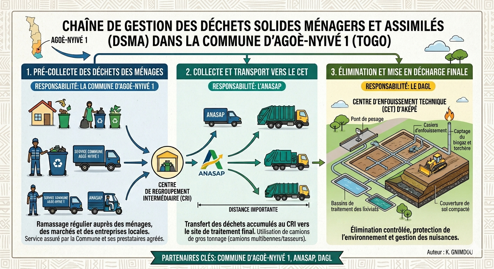

Analyse | 26 Avril 2026
Les défis de la gestion des déchets solides à Agoè-Nyivé 1 : Diagnostic et perspectives issues des résultats d'études, Août 2025
La gestion des déchets solides ménagers et assimilés constitue aujourd'hui un défi majeur pour le développement durable de la commune d'Agoè-Nyivé 1. Une analyse profonde révèle des failles structurelles nécessitant des réformes urgentes.

Un sous-financement chronique
Les contraintes financières pèsent lourdement sur l’efficacité du système communal. Les dépenses allouées à la gestion des déchets ne représentent qu’environ 03 % du budget total de la commune exercice 2025.
Le paradoxe de la couverture : Bien que le taux d’abonnement soit relativement élevé (84 %), la couverture effective n’atteint que 50 % du territoire communal.
Des failles techniques et environnementales
L’analyse du dispositif révèle l’absence d’étanchéité au niveau des centres de regroupement intermédiaire, exposant les sols et les nappes phréatiques à des risques de pollution.
Vers une approche systémique
- Une gouvernance performante et un financement adéquat.
- La mobilisation active des populations (sensibilisation).
- L'analyse économique des circuits de valorisation.